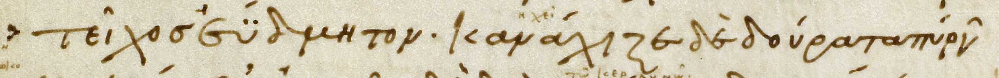
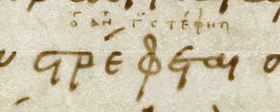
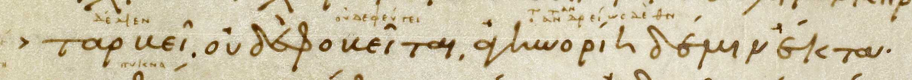

Blank Slide
The Composition of Venetus A with Regard to Aristarchan Critical Marks.
Intro
Where are we?
- 12.26-12.50
- Wall being destroyed
- Hector begins charge on the Greeks
Aristarchan Critical marks
- Aristarchus was a librarian who editted Homeric texts
- General format:
- Mark
- ὅτι or

Diplay
Something interesting here!!


Dotted diplay
Something interesting here related to Zenodotus!!


Now time for something actually interesting...
Example 1


Example 2


But wait... Theres more!!

Conclusion
- Unusual usage of Aristarchan marks
- Multiple sources
- Multiple passes